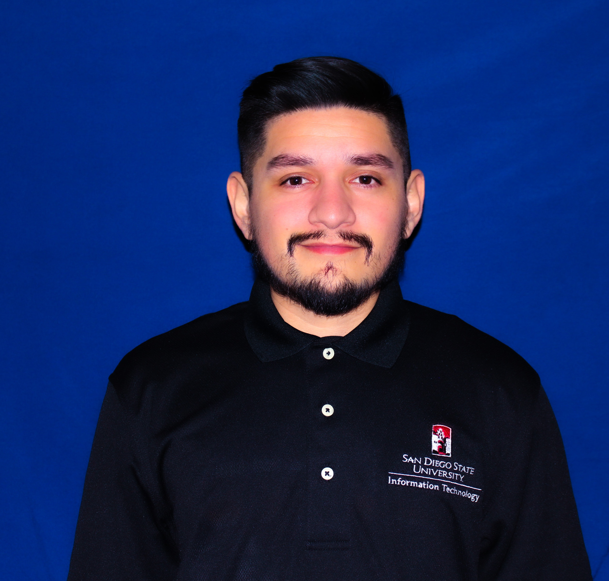

I am currently a fourth-year undergraduate student working on a Business Administration - Information Systems degree at the SDSU Fowler College of Business. I am a dedicated individual seeking an internship or entry-level position in the Information Technology (IT) field. My goal is to contribute to consult engagements and gain experience in the IT field. Some of my skills include team leadership and management, customer service, and Data Management Systems.
I am the most passionate about self-learning and self-improvement. Being a first-generation college student and amitous has shaped me into the person I am today. I am grateful for the opportunities I am presented with, and it encourages me always to give it my best. I enjoy taking on challenging projects and opportunities where I can help change the world through technology.
